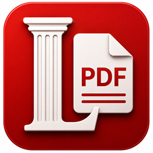
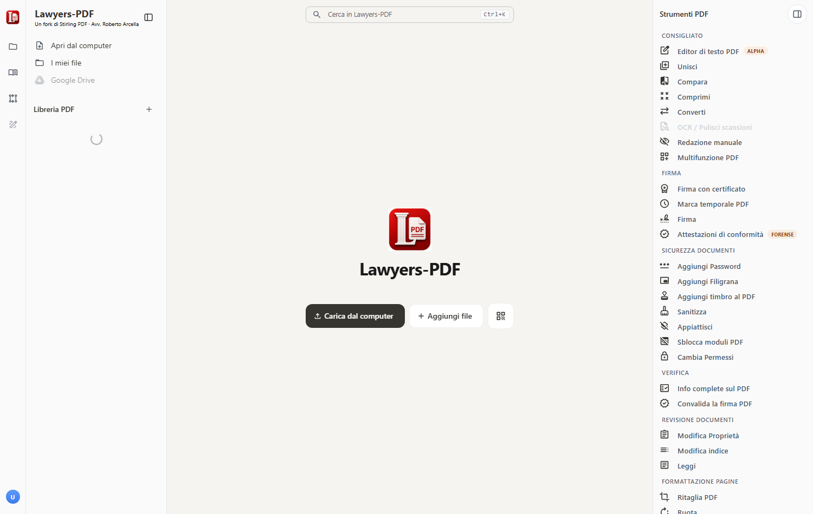
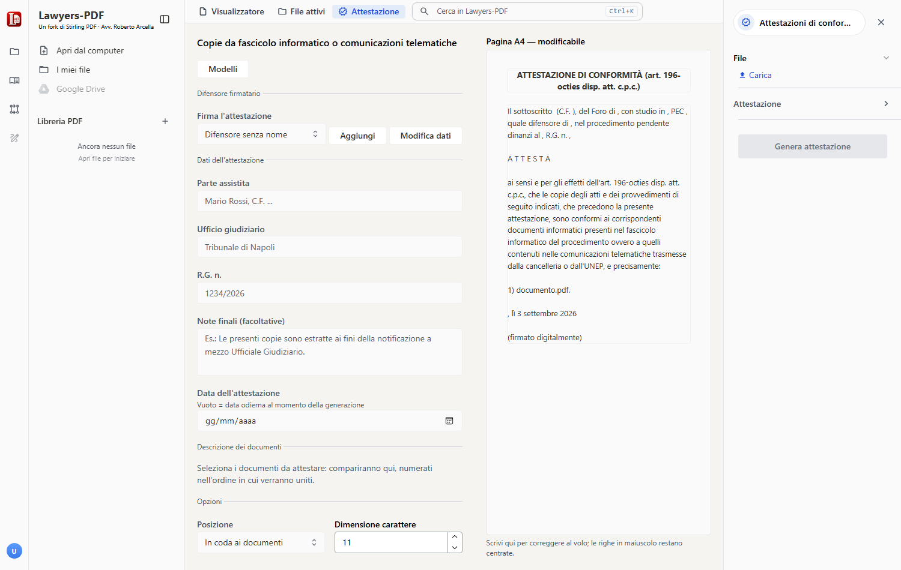
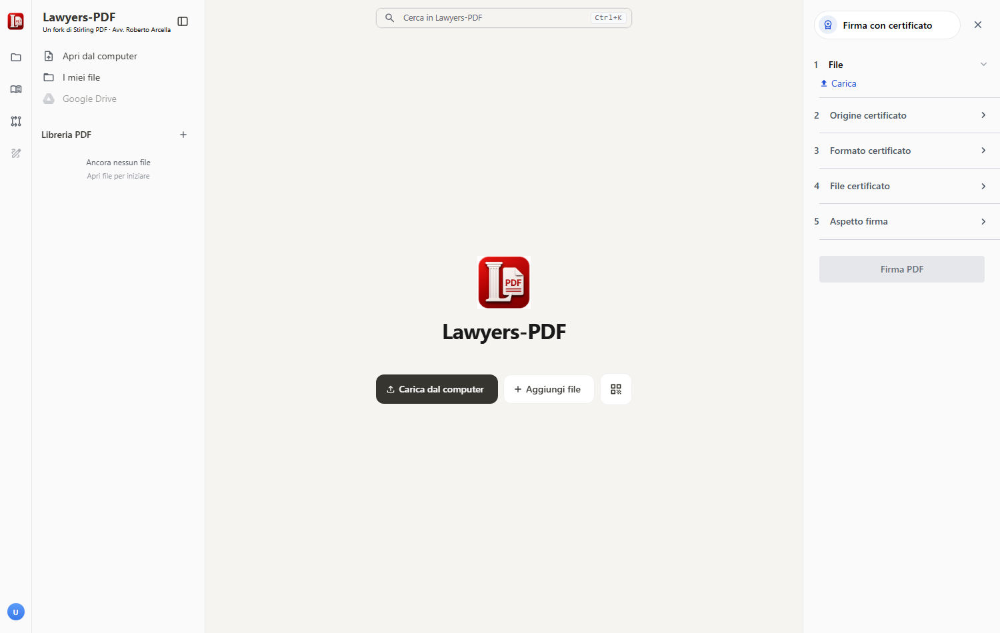
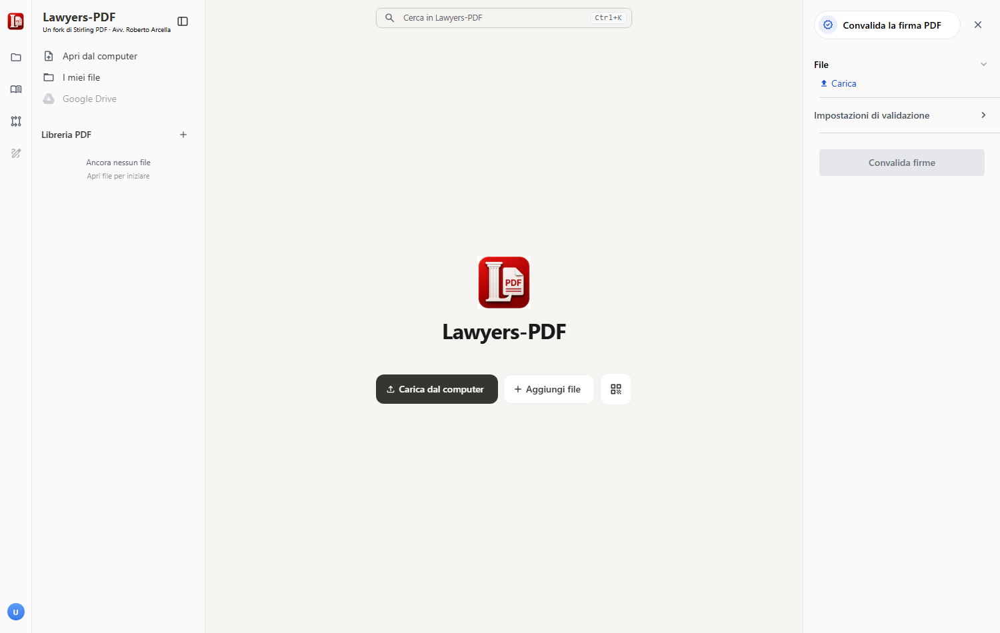
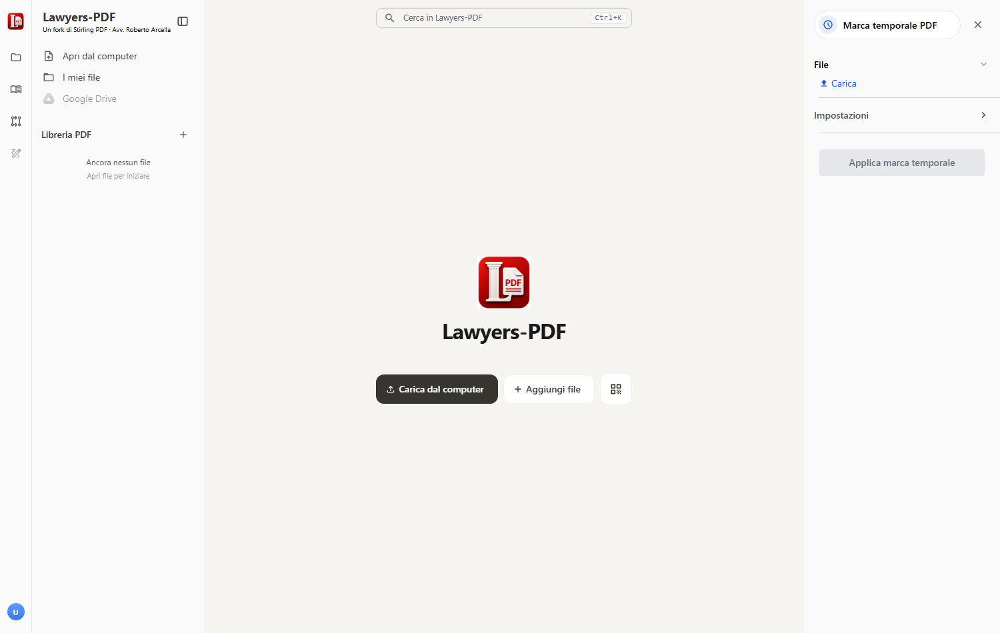
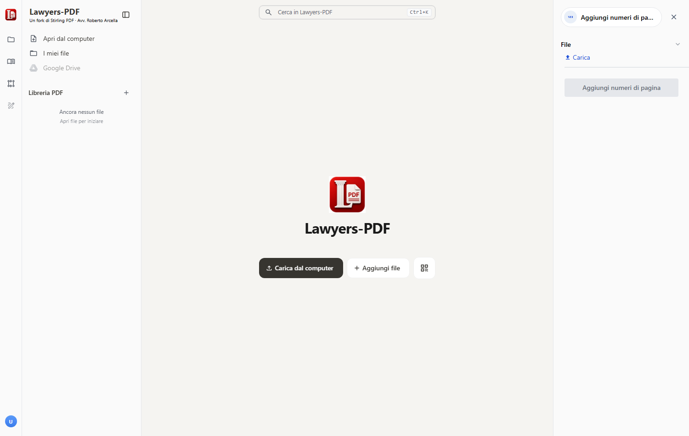

Figura 2 — L'icona che i file
.pdf assumono quando Lawyers-PDF è l'applicazione predefinita.
Lawyers-PDF è un programma per lavorare sui documenti PDF: unire, dividere, ruotare, comprimere, convertire, oscurare, firmare, marcare temporalmente, riconoscere il testo delle scansioni. A questo aggiunge una funzione scritta per lo studio legale: la redazione e l'apposizione delle attestazioni di conformità.
Gira interamente sul computer dove è installato. Non richiede un account, non chiede una registrazione, non ha un abbonamento e non manda i documenti da nessuna parte.

Lawyers-PDF è un fork — cioè una versione derivata e modificata — di Stirling PDF, un programma libero distribuito con licenza MIT. Il codice di partenza è di Stirling PDF Inc.; le modifiche (la funzione per le attestazioni, l'apertura dei PDF con un doppio clic, l'aspetto e i nomi) sono state aggiunte in questa versione.
La licenza MIT consente di usare, copiare, modificare e ridistribuire il programma, a condizione di conservare l'avviso di copyright originale. Il file LICENZA.txt, nella cartella del programma, riporta il testo completo e le attribuzioni dovute.
Stirling PDF esiste in due versioni: una libera e una commerciale, con funzioni a pagamento (archiviazione condivisa, gestione utenti, automazioni "Processor", fatturazione a consumo). Lawyers-PDF è compilato dalla sola parte libera: il modulo commerciale non è incluso nel programma, non è disattivato per impostazione.
Le conseguenze pratiche sono tre, ed è utile conoscerle:
Alcune voci dell'interfaccia originale presupponevano un account e un server remoto e qui non potrebbero funzionare: Firma condivisa e l'Editor di testo PDF (quest'ultimo ancora sperimentale anche a monte) sono stati rimossi dall'elenco degli strumenti. Il collegamento a Google Drive, nella colonna dei file, resta visibile ma inattivo.
La domanda conta più di ogni altra, per chi tratta atti coperti dal segreto professionale e dati di clienti. La risposta è: sul computer, e solo lì.
Il programma funziona come un piccolo server che parla soltanto con sé stesso, sull'indirizzo localhost — l'indirizzo che ogni computer riserva a sé. I documenti caricati restano nella memoria del browser locale e nella cartella temporanea del programma; le elaborazioni (unione, compressione, OCR e così via) avvengono in quel server locale.
Esiste una sola eccezione, dichiarata ed evidente, ed è la marca temporale: per sua natura richiede di interrogare un servizio esterno. Anche in quel caso, però, il documento non parte: viene inviata soltanto la sua "impronta" numerica (§ 6.8).
Impostazioni, registri e file accessori vivono in una cartella fissa del profilo utente — %LOCALAPPDATA%\Lawyers-PDF — indipendente da dove il programma viene avviato. Per rimuovere ogni traccia dal computer si cancella quella cartella oltre a quella del programma.
Le statistiche d'uso previste dal programma originale (PostHog, Scarf) sono disattivate nella configurazione distribuita. L'informativa completa è consultabile dal programma stesso, in Utente → Apri impostazioni → Note legali → Informativa sulla privacy: è servita in locale e si legge anche senza connessione.
Lawyers-PDF si distribuisce in due forme, equivalenti nel contenuto:
Lawyers-PDF-2.14.3-windows-x64-setup.exe). Installa per il solo utente corrente — nessuna richiesta di amministratore —, crea la voce nel menu Start, il collegamento sul desktop se lo si chiede, e propone l'associazione ai file PDF. Si disinstalla da Impostazioni → App come qualunque altro programma. È la forma consigliata.%LOCALAPPDATA%\Programs\Lawyers-PDF.In entrambi i casi Java non va installato: l'ambiente di esecuzione è incorporato.
| Elemento | A che cosa serve |
|---|---|
| Lawyers-PDF.exe | Avvia il programma. È questo il file da eseguire (o da collegare al desktop). |
| Arresta Lawyers-PDF.cmd | Ferma il programma quando la finestra è già stata chiusa. |
| Associa i PDF….cmd | Registra il programma come applicazione per i file PDF (capitolo 3). Solo nella versione portabile: con l'installer lo fa il programma di installazione. |
| Crea i collegamenti.cmd | Mette Lawyers-PDF sul desktop e nel menu Start. |
| LEGGIMI.txt | Riassunto essenziale, per chi non legge i manuali. |
| LICENZA.txt | Licenza d'uso, attribuzioni, esclusioni di garanzia. |
| app\ | Il programma vero e proprio. |
| runtime\ | L'ambiente Java incorporato. |
Doppio clic su Lawyers-PDF.exe. La prima volta Windows può mostrare l'avviso di SmartScreen: «Windows ha protetto il PC». Non è un allarme sul contenuto, ma la conseguenza del fatto che l'eseguibile non è firmato con un certificato commerciale (che ha un costo annuo e serve soltanto a evitare quel messaggio). Per procedere: Ulteriori informazioni → Esegui comunque.
L'avvio richiede da venti secondi a un minuto la prima volta, meno in seguito: il programma sta avviando il proprio server locale. Poi la finestra si apre da sola.
La finestra di Lawyers-PDF è, tecnicamente, una finestra di Microsoft Edge (o di Chrome, se installato) aperta in "modalità applicazione": senza schede, senza barra degli indirizzi, senza preferiti, con una propria voce nella barra delle applicazioni e con l'icona di Lawyers-PDF. All'atto pratico è una normale finestra di programma.
Questa scelta non è un ripiego: l'interfaccia è costruita con tecnologie web e questo consente di avere lo stesso programma, identico, su Windows, macOS e Linux. Se sul computer non fosse presente alcun browser basato su Chromium, il programma ripiegherà sull'apertura di una scheda nel browser predefinito.
Chiudere la finestra non ferma il server, che resta in attesa in secondo piano (così una successiva apertura è immediata). Riavviando il programma senza aprire un documento, la finestra già disponibile torna semplicemente in primo piano. Per fermare davvero il server — prima di spegnere, o per liberare memoria — si usa Arresta Lawyers-PDF.cmd (con l'installer, la disinstallazione lo ferma da sola).
Con l'installer i collegamenti sono creati automaticamente. Nella versione portabile, trattandosi di una cartella, Windows non li crea da solo: lo script Crea i collegamenti.cmd ne aggiunge uno sul desktop e uno nel menu Start, con l'icona corretta. Se in seguito la cartella viene spostata, basta rieseguirlo.
Il server locale usa la porta 8080. Se un altro programma la occupa già, Lawyers-PDF non parte. È un caso raro su un computer di studio; se dovesse capitare, si può cambiare la porta nel file settings.yml della cartella di configurazione creata al primo avvio.
La cartella portabile si può spostare, copiare su un'altra macchina o portare su una chiavetta USB: non lascia tracce nel registro di sistema, salvo quelle — reversibili — create volontariamente dagli script di associazione e dei collegamenti.
Per impostazione predefinita i PDF continuano ad aprirsi con il programma abituale (Acrobat, Edge, o altro). Volendo, Lawyers-PDF può diventare l'applicazione predefinita: i file mostreranno la sua icona e il doppio clic li aprirà direttamente nell'area di lavoro.
.pdf assumono quando Lawyers-PDF è l'applicazione predefinita.Chi ha usato l'installer ha già trovato l'opzione «Apri i file PDF con Lawyers-PDF» fra le scelte iniziali: se è stata spuntata, la registrazione descritta qui è già avvenuta e resta solo il passaggio del § 3.2. La disinstallazione rimuove tutto.
Eseguendo Associa i PDF a Lawyers-PDF.cmd il programma viene registrato presso Windows per il tipo di file .pdf: viene dichiarata l'icona dei documenti, il comando di apertura, e la voce «Lawyers-PDF» compare sia nell'elenco delle app predefinite sia nel menu Apri con.
Le modifiche riguardano soltanto il profilo dell'utente corrente (non l'intero computer), non richiedono privilegi di amministratore e sono integralmente reversibili.
Nessun programma può nominarsi predefinito da solo: Windows 11 riserva la scelta all'utente. Lo script, alla fine, propone di aprire la pagina giusta delle impostazioni. Il percorso è:
.pdf, confermare Lawyers-PDFIn alternativa, sul singolo file: tasto destro → Apri con → Scegli un'altra app → Lawyers-PDF → spuntare Usa sempre questa app.
La registrazione aggiunge comunque Lawyers-PDF alla voce Apri con. Si può quindi lasciare Acrobat come programma abituale e ricorrere a Lawyers-PDF solo quando serve.
Il doppio clic su un PDF si comporta in modo diverso a seconda che il programma sia già aperto:
Selezionando più PDF insieme e premendo Invio, tutti finiscono nella stessa finestra, nell'ordine in cui sono stati passati.
Ripristina l'associazione dei PDF.cmd rimuove la registrazione e la scelta memorizzata da Windows. Al primo doppio clic successivo, Windows chiederà di nuovo con quale programma aprire i PDF.
La finestra è divisa in tre parti stabili:
Tre strade, equivalenti: il pulsante Carica dal computer; il trascinamento dei file nella finestra; il doppio clic su un PDF, se si è impostata l'associazione (capitolo 3).
In alto, al centro, le schede permettono di passare dal Visualizzatore (il documento come apparirà) all'elenco dei File attivi. L'editor delle pagine — le miniature che si possono ruotare, spostare o eliminare trascinandole — si raggiunge dalle icone della barra verticale a sinistra.
Con Ctrl+K si apre una casella che cerca fra strumenti, file e impostazioni. È il modo più rapido per raggiungere una funzione senza scorrere l'elenco.
Lo schema è sempre lo stesso: si seleziona il documento nella libreria, si sceglie lo strumento, si compilano le impostazioni, si preme il pulsante di conferma in fondo al pannello. Il risultato sostituisce il documento nell'area di lavoro; da lì si scarica con il menu del file (i tre puntini) oppure con il pulsante di download che compare al termine dell'operazione.
Il risultato di uno strumento non viene salvato da solo sul disco: resta nell'area di lavoro finché non lo si scarica. Chiudendo il programma senza scaricare, il lavoro resta comunque nella libreria alla riapertura, ma è buona regola scaricare subito ciò che serve.
I documenti caricati restano nella libreria anche dopo la chiusura, perché sono conservati nella memoria locale del browser. Vanno rimossi a mano quando non servono più — operazione consigliabile quando si è lavorato su documenti riservati e il computer è condiviso.
È la funzione scritta appositamente per lo studio. Compone il testo di un'attestazione di conformità, secondo il modello scelto e i dati inseriti, e lo aggiunge come pagina al documento (o ai documenti) cui si riferisce.
Il risultato è un unico PDF: prima gli atti, in fondo l'attestazione che li richiama uno per uno in un elenco numerato. Resta poi da firmarlo digitalmente — l'attestazione, per valere, dev'essere sottoscritta (capitolo 6).

In cima ai campi da compilare c'è la sezione Difensore firmatario. Alla prima attestazione conviene aprirla e inserire i propri dati con Modifica dati: nome e cognome, codice fiscale, foro di appartenenza, indirizzo dello studio, PEC e luogo (quello che comparirà accanto alla data, in calce). Questi dati compaiono nell'intestazione e nella sottoscrizione di ogni attestazione.
Il menu «Firma l'attestazione» è una vera rubrica: con Aggiungi si registrano più difensori, e per ogni attestazione si sceglie chi la sottoscrive. È il caso della segretaria che predispone attestazioni per più professionisti dello studio: seleziona il difensore giusto dal menu, e l'intestazione, la firma e l'anteprima si adeguano da sole. Con Elimina difensore si rimuove un nominativo non più utile.
I dati si inseriscono una volta sola e restano memorizzati soltanto su questo computer, nella memoria locale del programma: non vengono trasmessi né inclusi nel programma distribuito. Un'installazione appena fatta parte quindi con la rubrica vuota, da compilare.
I modelli inclusi sono dieci, raggruppati per materia. La tabella li elenca con il riferimento normativo e l'ipotesi tipica d'uso.
| Modello | Riferimento | Quando si usa |
|---|---|---|
| Copie da fascicolo informatico o comunicazioni telematiche | art. 196-octies disp. att. c.p.c. | Copie di atti e provvedimenti estratte dal fascicolo informatico, o contenute nelle comunicazioni telematiche di cancelleria o dell'UNEP. |
| Deposito telematico di copia di atto analogico | art. 196-novies, co. 1 | Copia informatica, anche per immagine, di un atto formato su supporto analogico che il difensore detiene in originale o in copia conforme. |
| Espropriazione forzata — iscrizione a ruolo | art. 196-novies, co. 2 | Iscrizione a ruolo dell'espropriazione forzata: artt. 518 co. 6, 543 co. 4, 557 co. 2 c.p.c. |
| Trasmissione all'ufficiale giudiziario | art. 196-decies | Copie trasmesse all'ufficiale giudiziario per la notificazione o per l'esecuzione. |
| Richiesta di notificazione | art. 137, ult. co., c.p.c. | Richiesta all'ufficiale giudiziario, preceduta dalla dichiarazione sul numero dei destinatari. |
| Processo tributario telematico | art. 25-bis d.lgs. 546/1992 · art. 72 d.lgs. 175/2024 | Attestazione nel processo tributario. Il riferimento normativo è scelto automaticamente in base alla data (§ 5.9). |
| Processo penale telematico | art. 111-ter c.p.p. | Copie e attestazioni nel procedimento penale. |
| Copia informatica di documento analogico | art. 22 d.lgs. 82/2005 (CAD) | Copia informatica di un documento cartaceo, fuori dallo specifico regime processuale. |
| Duplicato informatico | art. 23-bis, co. 1, CAD | Dichiarazione di deposito di duplicato informatico (stessa sequenza di bit dell'originale). |
| Copia analogica di documento informatico | art. 23 CAD | Copia su carta di un documento informatico. |
Selezionando più file, il comportamento predefinito è quello che serve nella maggior parte dei casi: i documenti vengono uniti in un unico PDF con una sola attestazione finale, che li elenca numerati nell'ordine di unione.
L'ordine si controlla dal pannello dello strumento Unisci, dove i documenti compaiono in un elenco numerato: le frecce su/giù lo cambiano a mano, oppure si ordina automaticamente per nome o per data. È lo stesso ordine con cui l'attestazione li richiama. Disattivando l'unione, ciascun documento riceve invece la propria attestazione separata: utile quando gli atti vanno depositati come file distinti.
L'unione non rimuove le firme digitali dei documenti di partenza. Va però tenuto presente che unire più PDF firmati in un unico file rende quelle firme non più verificabili sul file risultante, perché ciascuna si riferisce al proprio documento originale: è una conseguenza del funzionamento della firma, non del programma. Quando la verificabilità delle singole firme è essenziale, si disattiva l'unione.
Il pulsante Rileva ufficio e R.G. dal documento analizza il testo del primo documento selezionato e, se li riconosce, compila i campi corrispondenti. Funziona sui PDF che contengono testo; su una scansione senza OCR non trova nulla e lo dichiara. In tal caso si può prima passare lo strumento OCR (§ 7.1) e riprovare.
Due opzioni in fondo al pannello dei dati:
Il pulsante Modelli apre l'editor: si può cambiare titolo e testo dei modelli inclusi — con Ripristina originale per tornare indietro — e crearne di nuovi.
Nel testo si usano segnaposto fra doppie graffe, che vengono sostituiti al momento della generazione:
| Segnaposto | Contenuto |
|---|---|
| {{difensore}} | Nome e cognome dal difensore firmatario |
| {{codiceFiscale}} | Codice fiscale del difensore |
| {{foro}} | Foro di appartenenza |
| {{studio}} | Indirizzo dello studio |
| {{pec}} | Indirizzo PEC |
| {{luogo}} | Luogo della sottoscrizione |
| {{data}} | Data dell'attestazione |
| {{elencoAtti}} | L'elenco numerato dei documenti, con le descrizioni |
| {{parte}} {{ufficio}} {{rg}} {{destinatari}} {{note}} | I campi compilati nel pannello, secondo il modello |
Il modello tributario contiene una particolarità: il riferimento normativo non è fisso. Fino al 31 dicembre 2026 il testo richiama l'art. 25-bis d.lgs. 546/1992; per le attestazioni datate successivamente, l'art. 72 d.lgs. 175/2024. La scelta avviene automaticamente in base alla data dell'attestazione — quella indicata nel campo apposito, o la data odierna se lasciato vuoto.
I modelli sono un punto di partenza redazionale, non un parere. Il programma compone un testo e lo unisce a dei file: non verifica che il documento allegato sia davvero quello che l'attestazione descrive, non controlla la corrispondenza con il fascicolo informatico, non sa se la copia sia conforme. La conformità è attestata dal difensore che sottoscrive, e la responsabilità — anche penale — resta integralmente sua.
Un'attestazione non sottoscritta non attesta nulla. Il PDF generato va firmato digitalmente. Sul punto — quale firma, con quale strumento e con quali cautele per il deposito telematico — si veda il capitolo che segue, e in particolare il § 6.5.
Nell'elenco degli strumenti compaiono più voci che parlano di firma. Non sono varianti della stessa cosa: sono operazioni giuridicamente diverse, ed è essenziale non confonderle.
| Strumento | Che cosa fa tecnicamente | Che valore ha |
|---|---|---|
| Firma | Disegna sul documento un'immagine: una firma tracciata col mouse, digitata, o caricata da file. | Nessun valore di firma elettronica qualificata. È un disegno. |
| Aggiungi timbro al PDF | Sovrappone un'immagine o un testo (un timbro, un logo, una dicitura). | Come sopra: elemento grafico. |
| Firma con certificato | Appone una firma digitale crittografica, con un certificato da file o da dispositivo. | Firma elettronica: il valore dipende dal certificato e dal dispositivo usati (§ 6.3-6.5). |
| Marca temporale PDF | Aggiunge una marca temporale RFC 3161 rilasciata da un'autorità di marcatura. | Data certa, con i limiti del § 6.8. |
Vale la pena di essere espliciti, perché l'equivoco è frequente e le conseguenze sono serie: una firma disegnata sul PDF non è una firma digitale. È un'immagine sovrapposta al documento. Chiunque può ritagliarla e incollarla altrove; non garantisce chi ha firmato, né che il documento non sia stato modificato dopo.
Ciò non significa che sia inutile. Va bene per una copia di cortesia, per un documento interno, per dare al destinatario l'aspetto consueto di un atto sottoscritto quando la sottoscrizione giuridicamente rilevante è altrove. Non va bene per nulla che debba valere come firma.
È la firma digitale vera e propria: il documento viene sottoposto a un'operazione crittografica con la chiave privata del firmatario, e chiunque può verificarne l'integrità e la provenienza.
Lawyers-PDF accetta il certificato in quattro forme:
| Formato | Note |
|---|---|
| PKCS#12 (.p12, .pfx) | Il formato più comune per i certificati esportabili su file. Richiede la password del contenitore. |
| PEM | Due file separati: certificato e chiave privata. |
| JKS | Contenitore Java, raro fuori da contesti tecnici. |
| PKCS#11 | Dispositivo fisico: business key, smart card, token USB (§ 6.4). |
Oltre al certificato si possono indicare: l'alias (quando il contenitore ospita più certificati), il motivo della firma, il luogo, il nome del firmatario, se mostrare o no la firma visibile e su quale pagina.

È il caso più frequente per l'avvocato: il certificato di firma qualificata risiede su un dispositivo (chiavetta o smart card) rilasciato da un prestatore di servizi fiduciari, e non è esportabile — è proprio questo che lo rende qualificato. Lawyers-PDF può usarlo in due modi:
.dll fornito con il dispositivo) e lo slot, il programma dialoga direttamente con il token. Il PIN si inserisce al momento della firma.La firma con dispositivo funziona perché il programma gira sul computer dell'utente, accanto al lettore di smart card. È una funzione disponibile nell'edizione locale come questa; in un'installazione su server remoto sarebbe disattivata, e giustamente.
Questo paragrafo merita attenzione, perché riguarda un punto in cui è facile sbagliare. La firma apposta da Lawyers-PDF è una firma PDF nella forma classica (adbe.pkcs7.detached): quella storicamente introdotta da Adobe, riconosciuta da Acrobat e dai lettori PDF, corrispondente al profilo PAdES basic (ETSI TS 102 778-2). Non dichiara il sotto-filtro ETSI.CAdES.detached, proprio del profilo PAdES-BES.
Le specifiche tecniche del processo civile telematico richiedono che gli atti siano sottoscritti in formato CAdES (il file .p7m) oppure PAdES-BES. La firma prodotta da questo programma, pur essendo crittograficamente valida e verificabile, non dichiara il profilo PAdES-BES: per il deposito, si continui a usare il software di firma del proprio prestatore (Dike, ArubaSign, FirmaCerta e simili). La firma di Lawyers-PDF resta pienamente utile per tutto il resto: copie di cortesia, corrispondenza, documenti contrattuali fra parti che non richiedano quel profilo, archiviazione interna con garanzia di integrità.
Lo strumento Convalida la firma PDF esamina un documento firmato e riferisce che cosa contiene: chi ha firmato, quando, con quale certificato, se il documento è stato modificato dopo la firma. È utile per controllare un atto ricevuto dalla controparte o dalla cancelleria.

La verifica riguarda l'integrità del documento e i dati del certificato. Non equivale a una verifica completa presso gli elenchi di fiducia europei (la Trusted List): per un accertamento formale sulla qualificazione del certificato restano gli strumenti istituzionali, come il validatore dell'AgID o quello della Commissione europea.
Rimuovi firma digitale elimina le firme presenti in un PDF. Serve, in pratica, quando si deve rielaborare un documento firmato (per esempio estrarne alcune pagine): l'operazione sarebbe comunque impossibile mantenendo la firma valida. La rimozione è ovviamente definitiva sul file risultante: l'originale firmato va conservato a parte.
La marca temporale attribuisce al documento una data opponibile: un'autorità di marcatura (Time Stamp Authority) certifica che quel documento esisteva in quel momento. Tecnicamente, Lawyers-PDF calcola l'impronta SHA-256 del documento, la invia all'autorità scelta secondo il protocollo RFC 3161, e incorpora nel PDF la marca ricevuta come document timestamp (/Type /DocTimeStamp, sotto-filtro ETSI.RFC3161): il formato corretto, quello previsto dagli standard PAdES.
Il documento non viene inviato: parte soltanto la sua impronta numerica, dalla quale il contenuto non è ricostruibile. È la ragione per cui l'operazione, pur richiedendo la rete, non incrina la riservatezza dell'atto.

I servizi preconfigurati sono cinque: DigiCert, Sectigo, SSL.com, FreeTSA e MeSign.
Questi servizi sono gratuiti e tecnicamente solidi: usano SHA-256, un algoritmo di hash robusto e attuale, e producono marche conformi all'RFC 3161. Non sono però prestatori di servizi fiduciari qualificati ai sensi del regolamento eIDAS: non figurano, per il servizio di marcatura, negli elenchi di fiducia degli Stati membri. La conseguenza è precisa. La validazione temporale elettronica qualificata gode, ai sensi dell'art. 41 eIDAS, della presunzione di accuratezza della data e ora e di integrità dei dati. Una marca non qualificata non gode di quella presunzione: l'art. 41, paragrafo 1, esclude che le si possano negare effetti giuridici e ammissibilità come prova per il solo fatto di non essere qualificata, ma il suo valore resta rimesso al libero apprezzamento del giudice.
In pratica: per dare data certa a un documento nell'interesse dello studio, per documentare quando una bozza è stata chiusa, per l'archiviazione interna, la marca gratuita è più che sufficiente. Quando la data certa costituisce un elemento della fattispecie — un termine, una decadenza, un'anteriorità da opporre a un terzo — occorre una marca temporale qualificata, acquistata da un prestatore qualificato (in Italia, Aruba, Infocert, Namirial e gli altri iscritti nell'elenco AgID).
Quando si devono fare più cose sullo stesso documento, l'ordine non è indifferente:
Segue una rassegna per categorie. Gli strumenti sono molti; qui interessa soprattutto sapere che cosa esiste, per ritrovarlo al momento del bisogno con Ctrl+K.
| Strumento | Che cosa fa |
|---|---|
| Unisci | Accorpa più PDF in uno solo. Nel pannello un elenco numerato mostra l'ordine di unione: le frecce su/giù lo cambiano a mano, oppure si ordina per nome o data. È lo strumento del fascicolo di parte. |
| Dividi | Separa un PDF in più file: per pagine, per intervalli, per dimensione. |
| Comprimi | Riduce il peso del file. Utile quando il deposito o la PEC impongono un limite. |
| Converti | Da e verso altri formati. Funzionano sempre immagini (PNG, JPG, TIFF…), testo semplice, CSV. Richiedono invece LibreOffice installato le conversioni verso Word, RTF, presentazioni, HTML, XML e PDF/A. |
| OCR / Pulisci scansioni | Riconosce il testo delle scansioni e lo rende ricercabile e copiabile. Richiede il motore esterno OCRmyPDF/Tesseract: se non è installato, la voce resta in grigio (§ 9). |
| Compara | Confronta due PDF e mostra le differenze: due versioni di un contratto, per esempio. |
| Redazione manuale | Oscura porzioni di testo. Va usato con l'accortezza del § 8.3. |
| Aggiungi testo / immagine / Annota | Inserisce testo, immagini o annotazioni sulle pagine. |
| Compila modulo | Compila i campi dei PDF modulistici. |
| Strumento | Che cosa fa |
|---|---|
| Aggiungi / Rimuovi Password | Protegge il file con una password di apertura, o la toglie (conoscendola). |
| Cambia Permessi | Limita stampa, copia, modifica. Sono vincoli deboli, che qualunque programma può ignorare: non sostituiscono la password. |
| Aggiungi Filigrana | Sovrappone una scritta ripetuta ("copia", "bozza", il nome del destinatario). |
| Sanitizza | Rimuove JavaScript, azioni automatiche e contenuti attivi. Consigliato sui PDF di provenienza ignota. |
| Appiattisci | Trasforma moduli e annotazioni in contenuto fisso, non più modificabile. |
| Sblocca moduli PDF | Riabilita la compilazione dei campi bloccati. |
| Strumento | Che cosa fa |
|---|---|
| Info complete sul PDF | Mostra tutto ciò che il file contiene: metadati, autore, date, software di produzione, firme, allegati. Utile per capire la provenienza di un documento ricevuto. |
| Convalida la firma PDF | § 6.6. |
| Modifica Proprietà | Cambia titolo, autore, oggetto e parole chiave. Serve anche a ripulire i metadati prima di trasmettere un file. |
| Modifica indice | Costruisce o corregge i segnalibri: un fascicolo voluminoso diventa navigabile. |
| Leggi | Lettura a schermo intero del documento. |
| Strumento | Che cosa fa |
|---|---|
| Ruota / Rotazione automatica | Raddrizza le pagine; la versione automatica riconosce l'orientamento del testo. |
| Riorganizza pagine | Sposta, duplica, elimina pagine trascinandole. |
| Ritaglia | Elimina i margini o porzioni di pagina. |
| Ridimensiona pagine | Uniforma i formati (A4, Letter) in un documento eterogeneo. |
| Aggiungi numeri di pagina | Numera le pagine, con posizione e formato a scelta. Utile per la numerazione progressiva del fascicolo. |
| Layout multipagina / Imposizione a libretto | Più pagine per foglio; impaginazione a libretto per la stampa. |
| PDF in unica pagina grande | Riversa l'intero documento in una sola pagina continua. |
| Allega file | Incorpora allegati nel PDF. |

| Strumento | Che cosa fa |
|---|---|
| Estrai pagine | Ricava un nuovo PDF da un intervallo di pagine. |
| Estrai immagini | Salva separatamente le immagini contenute nel documento. |
| Rimuovi pagine / vuote / immagini / annotazioni | Alleggerisce o ripulisce il documento. |
| Rimuovi firma digitale | § 6.7. |
Due strumenti per il lavoro ripetitivo:
Completano l'elenco alcune funzioni tecniche: regolazione di colori e contrasto, riparazione di file danneggiati, riconoscimento e separazione di più foto in una singola scansione, sovrapposizione di PDF, sostituzione dei colori, effetto scanner (per dare a un PDF nativo l'aspetto di una copia acquisita). La sezione per sviluppatori espone la documentazione delle API e alcune impostazioni di sistema: non serve all'uso quotidiano.
Caricare gli atti nell'ordine voluto → selezionarli tutti → Attestazioni di conformità → scegliere il difensore firmatario → modello art. 196-octies (o quello pertinente) → compilare parte, ufficio, R.G. → descrivere i documenti → Genera attestazione → scaricare → firmare con il software del proprio prestatore (§ 6.5) → depositare.
Unisci i documenti nell'ordine dell'indice (regolandolo con le frecce nel pannello) → Aggiungi numeri di pagina per la numerazione progressiva → Modifica indice per creare i segnalibri con il nome di ciascun documento.
Redazione manuale per coprire le porzioni riservate → Appiattisci per rendere l'oscuramento definitivo → Modifica Proprietà per ripulire i metadati → controllare il risultato con Info complete sul PDF. Il secondo passaggio non è facoltativo: un rettangolo nero sovrapposto, senza appiattimento, può lasciare sotto di sé il testo originale, recuperabile con un semplice copia-incolla. È un incidente documentato in casi celebri, e in materia di dati personali costa caro.
OCR (se serve il testo ricercabile) → Comprimi scegliendo il livello → verificare la leggibilità nel visualizzatore prima di inviare.
Scaricare il documento definitivo → Marca temporale PDF → scegliere il servizio → applicare. Per uso interno la marca gratuita basta; se la data deve reggere in giudizio contro un terzo, si veda l'avvertenza del § 6.8.
| Sintomo | Che cosa fare |
|---|---|
| Il programma non parte, o la finestra non si apre | Un'altra applicazione occupa la porta 8080. Eseguire Arresta Lawyers-PDF.cmd e riavviare. (Riavviare il programma mentre è già attivo in secondo piano è invece innocuo: riporta semplicemente in primo piano la finestra esistente.) |
| Windows avvisa che l'editore è sconosciuto | Normale: l'eseguibile non è firmato (§ 2.2). |
| Il doppio clic su un PDF non lo apre in Lawyers-PDF | L'associazione è registrata ma non ancora scelta come predefinita: § 3.2. |
| I file PDF mostrano ancora la vecchia icona | Windows conserva una cache delle icone. Rieseguire lo script di associazione, che la svuota, oppure riavviare Esplora file. |
| Fra i formati di conversione non compaiono Word, RTF o PDF/A | Servono programmi esterni non inclusi: LibreOffice per i formati Office e Ghostscript per PDF/A. Installandoli, i formati compaiono da soli al riavvio. |
| La voce «OCR / Pulisci scansioni» è in grigio | Il motore di riconoscimento (OCRmyPDF/Tesseract) non è installato. Il resto del programma funziona ugualmente: è l'unico strumento che dipende da un componente esterno. |
| «Rileva ufficio e R.G.» non trova nulla | Il documento è una scansione senza testo: passare prima l'OCR (§ 7.1). |
| La marca temporale non viene applicata | Serve la connessione a internet, e il servizio scelto può essere temporaneamente irraggiungibile: provarne un altro fra i cinque. |
| Il token di firma non compare | Verificare che il dispositivo sia inserito e che il middleware del produttore sia installato; per il PKCS#11 occorre indicare il percorso esatto della libreria. |
| Un'operazione su un file molto grande sembra bloccata | OCR e compressione su documenti di centinaia di pagine richiedono minuti. Il programma mostra l'avanzamento. |
Lawyers-PDF è un'opera derivata da Stirling PDF, distribuita con licenza MIT. Il testo integrale della licenza, con l'avviso di copyright originale, è nel file LICENZA.txt della cartella del programma.
La licenza MIT consente di usare, copiare, modificare e ridistribuire il software; impone di conservare l'avviso di copyright e la licenza in ogni copia. Nulla di ciò che è coperto dalla licenza proprietaria di Stirling PDF è incluso in questa versione.
Marchi. "Stirling PDF" è un marchio del suo titolare. Lawyers-PDF non è un prodotto di Stirling PDF Inc., non è da essa approvato né sostenuto; il riferimento all'origine del codice ha finalità di attribuzione, come la licenza richiede.
Il software è fornito «così com'è», senza garanzia di alcun tipo, espressa o implicita, compresa — senza limitazione — la garanzia di commerciabilità, di idoneità a un fine particolare e di non violazione di diritti altrui. In nessun caso gli autori o i titolari del copyright potranno essere ritenuti responsabili per danni derivanti dall'uso del software.
L'uso è a esclusivo rischio dell'utente. In particolare, e per quanto qui più rileva: la correttezza, la completezza e la veridicità delle attestazioni di conformità, la scelta del modello appropriato, la verifica della conformità delle copie e l'osservanza delle norme sul deposito telematico restano di esclusiva responsabilità del difensore che sottoscrive. Il programma è uno strumento di redazione: non esprime pareri, non verifica documenti, non sostituisce il controllo professionale.
CAdES — Formato di firma elettronica avanzata su qualunque tipo di file; nel processo civile telematico è il file con estensione .p7m.
PAdES — Formato di firma elettronica per documenti PDF, che resta un PDF leggibile. Ne esistono profili diversi: basic (la forma classica adbe.pkcs7.detached) e BES, che è quello richiesto dalle specifiche del processo telematico.
PKCS#12 — Formato di file (.p12, .pfx) che racchiude certificato e chiave privata, protetto da password.
PKCS#11 — Standard con cui un programma dialoga con un dispositivo di firma (smart card, business key) attraverso una libreria fornita dal produttore.
RFC 3161 — Protocollo con cui si chiede e si riceve una marca temporale.
SHA-256 — Funzione di hash: calcola dal documento un'impronta numerica di lunghezza fissa, dalla quale il documento non è ricostruibile e che cambia se il documento cambia anche di un solo carattere.
TSA — Time Stamp Authority: l'autorità che rilascia le marche temporali.
eIDAS — Regolamento (UE) n. 910/2014 sull'identificazione elettronica e i servizi fiduciari, che definisce firme e marche temporali qualificate e il loro valore probatorio.
localhost — L'indirizzo di rete che ogni computer riserva a sé stesso. Un servizio in ascolto su localhost non è raggiungibile dall'esterno.
OCR — Optical Character Recognition: il riconoscimento del testo contenuto in un'immagine o in una scansione.